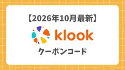
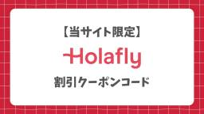
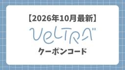
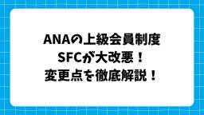
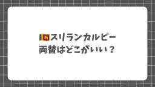

nrtlog.com
https://nrtlog.com/
nrtlog.com
フィード

【2026年10月最新】Klook(クルック)割引クーポンコードまとめ！毎月使う筆者がお得にチケットやツアーを買う方法を徹底解説！
nrtlog.com
【2026年10月最新】Klook(クルック)で今すぐ使える割引クーポンコード一覧！初回500円OFFやアプリ限定5%OFFに加え、チームラボやスカイビルなど有名施設が割引に！海外ディズニー・USJ・台湾・韓国で使える最新コードを完全網羅。クーポンの使い方や期限なども解説！
14時間前
【寝台特急サンライズ号】瀬戸と出雲の違いは？シャワーカードを買うコツやきっぷを手に入れる方法についても解説！
nrtlog.com
愛用者がサンライズ瀬戸と出雲の違いやシャワーカードについて解説！運行区間の違いやチケット確保のコツ、シャワーカードを買うための乗車位置まで紹介！日本唯一の定期寝台特急を攻略！
19時間前
【コロンボ】「Lotus First Class Lounge」に潜入！プライオリティパスやシャワー、食事などの提供物・ラウンジの様子を写真付きで紹介！
nrtlog.com
コロンボ・バンダラナイケ国際空港の「Lotus First Class Lounge」に潜入レビュー！プライオリティパスで入れる一番おすすめのラウンジ！24時間営業の店内、シャワールームや無料の食事・アルコール・Wi-Fiまで写真付きで徹底解説！
1日前

【当サイト限定】Holafly(オラフライ)の5%OFF限定クーポンコード！無制限のeSIMをお得に！
nrtlog.com
Holafly(オラフライ)の全商品が5%OFFになる当サイト限定割引クーポンコード(プロモコード)を公開！海外でデータ無制限で使える人気eSIMのお得な購入手順や決済画面での入力方法、エラー時の対処法まで分かりやすく解説。
2日前

【2026年10月最新】VELTRA(ベルトラ)のクーポンコードはある？誰でも使える割引やJCB・エポスなどクレカ優待を何度も使う筆者が解説！
nrtlog.com
【2026年10月最新】VELTRA(ベルトラ)のクーポンコード情報！初回クーポンや3,000円OFFの現状、誰でも使えるセール・キャンペーン、JCB・エポス・セゾン・イオンカードの優待割引と取得方法を、何度も使う筆者が徹底解説！
3日前
桂林两江国際空港の国内線「First & Business Class Lounge」へ潜入！プライオリティパスは？入り方や飲食物・料金について画像付きで徹底解説！
nrtlog.com
桂林两江国際空港の国内線「First & Business Class Lounge(ファースト & ビジネスクラスラウンジ)」を徹底解説。プライオリティパスの対応可否、ラウンジの場所や入り方、食事・ドリンクのメニューを実際に行った筆者が正直レビュー!
3日前

ANAのSFC改悪が一部見直しへ！SFC LITEもラウンジ利用可に。9月発表の新制度をSFC会員の筆者が徹底解説！
nrtlog.com
ANAのSFC改悪が9月に一部見直し！年間決済額300万円未満のSFC LITEも国内線は混雑時を除きラウンジ利用可能に！事前予約や再入会、4月案からの変更点をSFC会員の筆者が解説します！
4日前
JALカード naviの「語学検定ボーナスマイル」とは？申請方法や対象の資格、実際の手順の写真付きで徹底解説！
nrtlog.com
JALカード naviの特典「語学検定ボーナスマイル」を徹底解説！英検やTOEIC、日商簿記などの対象資格の一覧や獲得できるマイル数、Web申請手順や必要書類の撮影方法、申請期限や回数制限の注意点まで写真付きで紹介！
5日前
【正直レビュー】スカイプロムナードに行ってきた！名古屋の屋外展望台の夜景や料金、迷わない行き方とお得な予約方法も解説！
nrtlog.com
名古屋・ミッドランドスクエアの屋外展望台スカイプロムナードに行った正直レビュー。平日と土日で違う料金や営業時間、雨の日、42階入口までの迷わない行き方、夜景のおすすめ時間帯や所要時間、アソビューでのチケット予約方法を解説。
6日前

スリランカルピーの両替はどこがいい？お得な入手方法！コロンボ・バンダラナイケ国際空港の両替とATMキャッシングを徹底比較！日本(東京・大阪)で両替できる？最適解も紹介！
nrtlog.com
スリランカルピー(LKR)の両替・お得な入手方法を徹底解説！日本国内(東京・大阪)での事前両替は非現実的！コロンボ空港や銀行の両替やATMキャッシング、Wise・Revolutデビット引き出しを使おう！最適解も紹介！
6日前
福州長楽国際空港の国際線「First & Business Class Lounge」へ潜入！プライオリティパスは？入り方や飲食物・料金・シャワーについて画像付きで徹底解説！
nrtlog.com
福州長楽国際空港の国際線「First & Business Class Lounge(ファースト & ビジネスクラスラウンジ)」を徹底解説。プライオリティパスの対応可否、ラウンジの場所や入り方、食事・ドリンクのメニューを実際に行った筆者が正直レビュー!
7日前

【スリランカ】配車アプリ「PickMe」の登録方法と使い方やUberとの違いを徹底解説！トゥクトゥクやタクシーのぼったくりを回避しよう！
nrtlog.com
スリランカの配車アプリ「PickMe(ピックミー)」の登録方法や使い方、Uberとの違いを徹底解説！ドライバーが来ない時や見つからない時、お釣りトラブルの注意点まで紹介！トゥクトゥクやタクシーの事前料金確定でぼったくりを回避！日本でのSMS認証やクレジットカード登録、eSIM準備まで！
8日前
【世界遺産】桂林カルスト一望できる絶景「相公山」の入場料や行き方は？個人手配で行った筆者が攻略方法を解説！
nrtlog.com
桂林の絶景「相公山(シャンゴンシャン)」の行き方や入場料を徹底解説。桂林(けいりん : グイリン)・阳朔(陽朔 : ヤンシュオ)からのアクセス、日の出の時間、チャーター(包車)の手配方法を個人手配で行った筆者が解説。漓江カルストを一望する絶景スポットの攻略法や情報を紹介！
9日前
【コロンボ】バンダラナイケ国際空港近くSerene Villa Airport Transitをレビュー！トランジットに便利な立地で格安！
nrtlog.com
コロンボ・バンダラナイケ国際空港近く「Serene Villa Airport Transit」を写真付きで正直レビュー！深夜着・早朝便に便利な空港送迎やアクセス、客室や水回りの清潔さ、お得なTrip.com予約方法まで解説！
10日前
スリランカ航空はやばい？最悪？実際に乗りまくった筆者が事故の噂や評判を徹底検証！
nrtlog.com
スリランカ航空は「やばい」「落ちる」の噂は本当か徹底検証！事故歴や遅延・欠航をJALと比較！実際に何度も乗った筆者の正直な感想や安さの理由を徹底解説！
11日前
【世界遺産】桂林カルストを眺める漓江クルーズに乗船！自己手配での予約方法やクルーズの内容、陽朔からの帰り方を紹介！
nrtlog.com
桂林(ケイリン)の世界遺産を巡る漓江クルーズの自己手配・予約方法を徹底解説。送迎バスや船内の様子、見どころ、下船地である陽朔・阳朔から桂林市内への帰り方、阳朔の必須スポットを紹介。個人旅行で失敗しないための情報を大公開！
13日前
ヴィアインあべの天王寺を正直レビュー！ツインルームのお部屋の様子を写真付きで紹介！朝食についても解説！
nrtlog.com
ヴィアインあべの天王寺のツインルームに泊まって正直レビュー！JR天王寺駅やあべのハルカスからのアクセス、客室の清潔さやアメニティ、セパレートタイプのバスルームを写真付きで紹介！人気の朝食ビュッフェやお得に予約する方法も解説！
13日前
スリランカ航空のエコノミー機内食を9食食べて正直レビュー！実際の写真や選べるメニュー、事前予約、紅茶、まずいのかどうか紹介！
nrtlog.com
スリランカ航空エコノミークラスの機内食を正直レビュー！実際に9食食べた体験談をもとに、本格スパイスカレーや選べるメニュー、名物セイロンティー、まずいのか真相を解説。チャイルドミール等の特別食を事前予約する手順や注意点も紹介！
14日前
【包车】滴滴(DiDi)で中国タクシーチャーター！中国旅行で役立つ予約方法や料金、注意点を実際に行った筆者が徹底解説！
nrtlog.com
DiDi(滴滴)のミニプログラムを使った中国のタクシーチャーター(包車)方法を徹底解説。予約手順や料金目安、ドライバーとの合流や高速代などの注意点を実際に行った筆者が解説！
16日前
【スリランカ航空】座席指定やオンラインチェックインのやり方を徹底解説！事前指定の方法や有料・無料のパターン、できない時の対策も！
nrtlog.com
スリランカ航空の座席指定やオンラインチェックインのやり方を実際の手順の写真付きで徹底解説！事前指定が有料・無料になる条件とオンラインチェックインができない時の対処法まで紹介！
16日前
【中国】福州長楽国際空港近くのホテル「维也纳酒店」客室や無料の空港送迎、朝食を正直レビュー&写真で紹介！廈門航空のトランジットホテルで宿泊！
nrtlog.com
福州長楽国際空港近くの「维也纳酒店(ウィーンホテル)福州長楽国際空港店 : 维也纳酒店福州长乐国际机场店(Vienna Hotel Fuzhou Changle International Airport Branch)」を徹底解説！客室や設備、無料の空港送迎の乗り方や注意点を実際に行った筆者がレビュー！中国旅行や厦門航空の乗り継ぎ時に知っておきたい情報を紹介！
17日前
【中国】福州長楽国際空港近く「福州佰翔海瀛湾酒店」 客室や無料の空港送迎、朝食を正直レビュー&写真で紹介！廈門航空のトランジットホテルで宿泊！
nrtlog.com
福州長楽国際空港近くのホテル「福州佰翔海瀛湾酒店(Fuzhou Haiying Bay Fliport Resort Hotel)」を実際に止まってレビュー！！客室の広さや設備、無料の空港送迎シャトルバスの利用手順や注意点を徹底解説！中国旅行や厦門航空のの乗り継ぎ、トランジットホテル利用前に知っておきたい情報を紹介！
19日前
厦門航空の無料トランジットホテルの予約方法や利用条件は？実際に泊まった筆者がホテルレビューから現地での注意点まで徹底解説！
nrtlog.com
厦門航空の無料トランジットホテルの予約方法や利用条件を徹底解説！実際に宿泊した筆者が客室や設備のホテルレビュー、無料送迎バスや乗り継ぎ時の現地での注意点を解説！条件を満たせば無料で泊まれるお得なサービス活用法を紹介！
19日前
Alipayの登録方法と使い方を徹底解説！会員・クレジットカードの登録から地下鉄・バスの乗り方、商品注文方法まで！
nrtlog.com
Alipay(アリペイ)の登録方法と使い方を徹底解説！日本のクレジットカード登録手順や本人確認、現地での決済方法、地下鉄・バスの乗り方を紹介！中国旅行や出張で必須となる決済アプリの活用法！
20日前
【海外eSIM】Airalo(エラロ)とは？購入方法や実際の使用感などを中国旅行で使って紹介！
nrtlog.com
海外eSIM『Airalo(エラロ)』の特徴や使い方を徹底解説！アプリでの購入方法や設定手順、実際に中国旅行で使って現地での通信速度やSNS利用可否を紹介！お得な割引クーポンコードや注意点なども紹介！
21日前
【韓国】釜山金海空港でのSeSでの入国方法を図解で解説！入国審査の大行列をスキップ！
nrtlog.com
釜山・金海空港での韓国自動出入国審査「SeS」での入国手順を徹底解説！入国審査の大行列を回避し、自動ゲートで一瞬で入国するための徹底ガイド！
23日前
韓国の自動出入国審査「SeS」登録方法！日本人の申請条件や登録場所を実際に行った筆者が徹底解説！
nrtlog.com
韓国の自動出入国審査「SeS」の登録方法を実際に行った筆者が徹底解説！満17歳以上の日本人が対象で、登録場所は仁川空港か済州空港のみ(金浦は登録不可)。一度登録すればパスポート満了まで有効で、イミグレの行列を回避！
1ヶ月前
金浦空港の「スカイハブラウンジ」へ潜入！プライオリティパスは？入り方や飲食物・料金について画像付きで徹底解説！ANAやJALのラウンジについても！
nrtlog.com
金浦空港の「スカイハブラウンジ」に潜入！プライオリティパスの利用条件、場所、料金を徹底解説。トッポギや冷麺といった美味しい韓国料理やビールなどのアルコールも無料で楽しめるビュッフェ、コンセントやWi-Fiなどの設備まで画像付きで正直にレビュー！
1ヶ月前
ウズベキスタン航空のキャンセル方法を徹底解説！キャンセル手数料や返金期間なども紹介！
nrtlog.com
ウズベキスタン航空のキャンセル・払い戻し方法を徹底解説！公式サイトでの手続き手順、気になるキャンセル手数料や返金日数を実体験に基づき写真付きで紹介！
1ヶ月前
ダーワ・悠洛 京都を正直レビュー！朝食やバー、お部屋の様子を写真付きで紹介！お得に予約する方法も！
nrtlog.com
ダーワ・悠洛 京都の宿泊記＆レビュー。バンヤングループのラグジュアリーホテル！クラシックダブル客室の様子、無料のラウンジ「ネスト」、地下の竹林が広がる朝食ビュッフェやバー1867を写真付きで紹介！お得に予約する方法も！
1ヶ月前